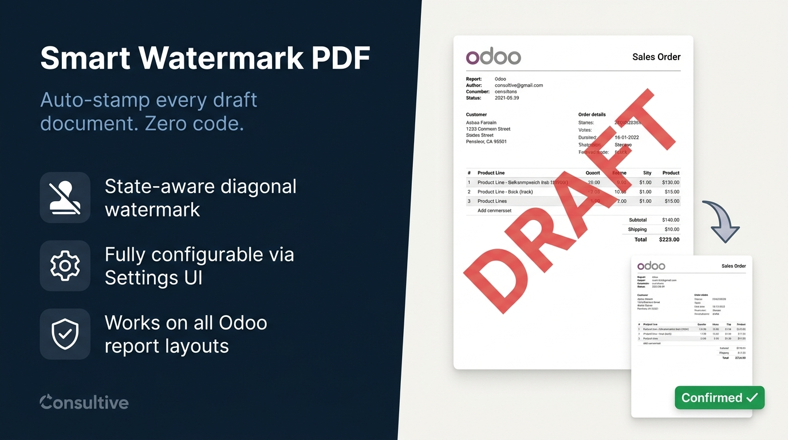
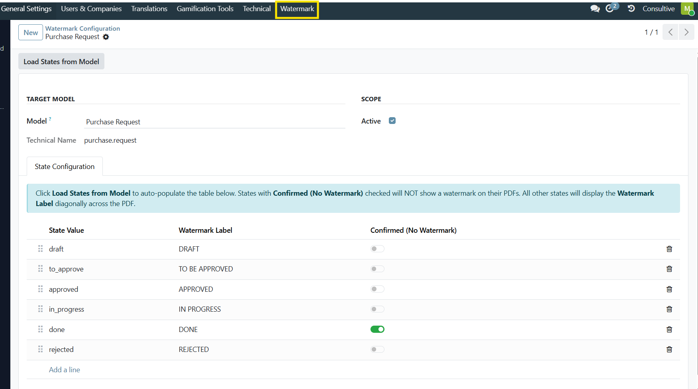

Smart Watermark PDF automatically overlays a bold diagonal watermark on any PDF printed from a non-confirmed record — a draft Sale Order, a pending RFQ, an unposted invoice. Once the document is confirmed, the watermark disappears and the PDF prints clean. All controlled through a simple Settings UI, no code changes needed.
|
🚩
State-Aware Watermark
Watermark appears only on non-confirmed records. Confirmed PDFs are always clean — no manual toggle needed.
|
⚙️
Config Per Model, No Code
Add any Odoo model in Settings → Watermark Configuration and go live instantly — no development needed.
|
🔄
One-Click State Auto-Load
Click "Load States from Model" and every state value is populated with a sensible default label automatically.
|
|
🏢
Multi-Company Support
Company-specific configuration overrides global settings — different watermark rules per company.
|
📄
All Four Report Layouts
Covers all built-in Odoo layouts: Standard, Striped, Boxed, and Bold — every printable report is covered.
|
🔒
Safe Opt-In
A model with no configuration gets no watermark. No risk of unexpected watermarks appearing on unconfigured reports.
|
Go to Settings → Technical → Reporting → Watermark Configuration and add any model that has a Print PDF action — Sale Order, Invoice, Purchase Order, Delivery Note, or anything else. Click "Load States from Model" to auto-populate every state. Then tick which states should not show a watermark (confirmed states). Done — no restart, no code.
Watermark Configuration — model, states, and confirmed states all managed from one settings screen.
When a user prints a PDF from a draft or non-confirmed record, a bold diagonal watermark is overlaid automatically — no extra clicks. The moment the document is confirmed, the watermark is gone and the PDF prints cleanly. State-aware logic runs entirely server-side.

Draft PDF with bold diagonal watermark — disappears automatically once the record is confirmed.
|
1
|
Create a configuration
Settings → Technical → Reporting → Watermark Configuration. Add the Odoo model you want to watermark.
|
|
2
|
Load states
Click "Load States from Model" — every state value is auto-populated with a sensible default label. States added later generate their label automatically.
|
|
3
|
Mark confirmed states
Tick "Confirmed (No Watermark)" for the states that should print clean — e.g. sale and done for Sale Orders.
|
|
4
|
Print — watermark appears automatically
Draft PDFs carry the diagonal watermark. Confirmed PDFs are clean. No extra clicks, no manual steps — it just works.
|
We specialize in custom Odoo development, implementation, and business process consulting — building modules that solve real operational problems, thoroughly tested and ready for production.
| 🌐 consultive.io | | | ✉ contact@consultive.io | | | 📞 +880 1711 751571 |